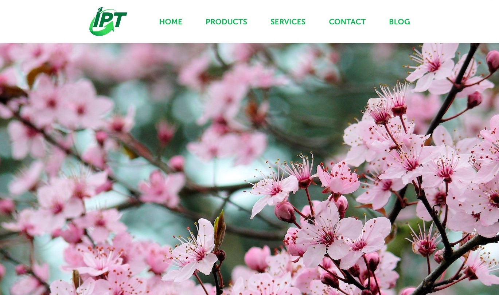
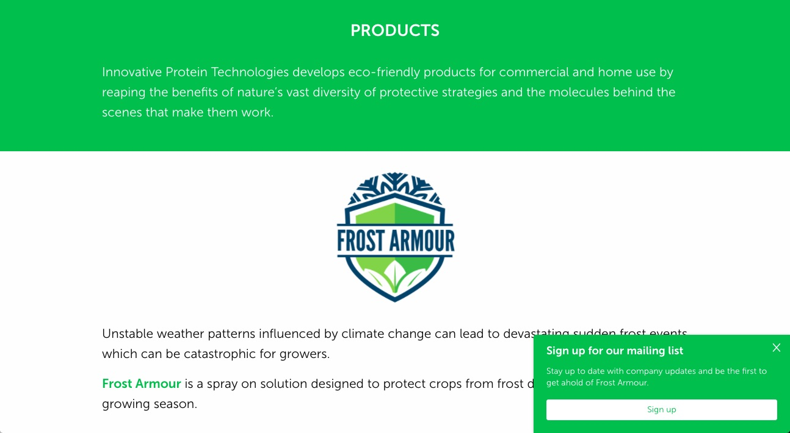
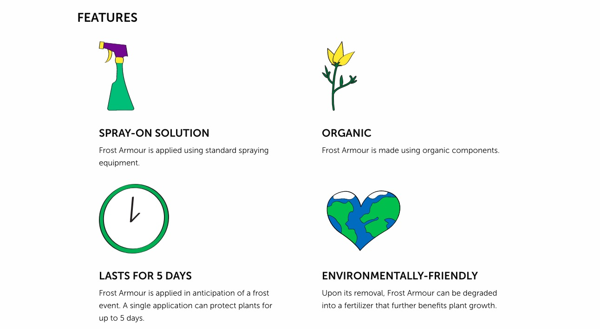
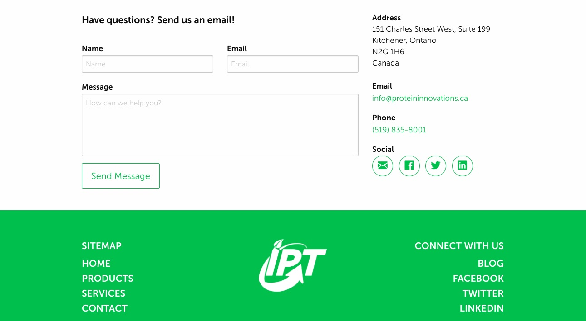

A motivated researcher who is passionate about the field of biotechnology and crafting the optimal user experience.
IPT Website

A redesign of Innovative Protein Technologies' website, written in HTML and CSS using the Foundation framework. I created a mockup in Adobe XD based on the new brand identity that I had created for the company - the new website was more colorful, much cleaner and easier to navigate than its predecessor.
Click here to see it live or look below for a photo-based site tour.


